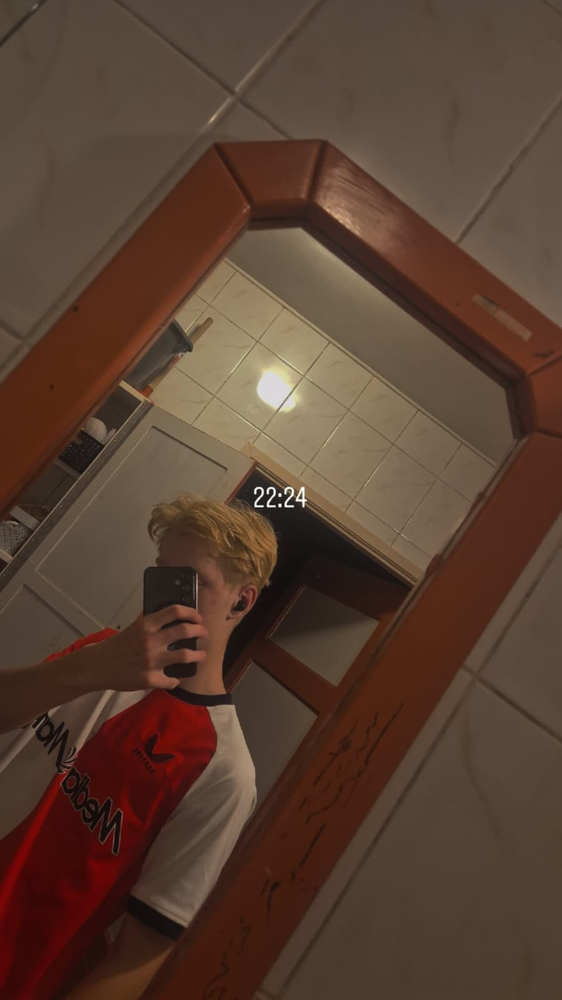
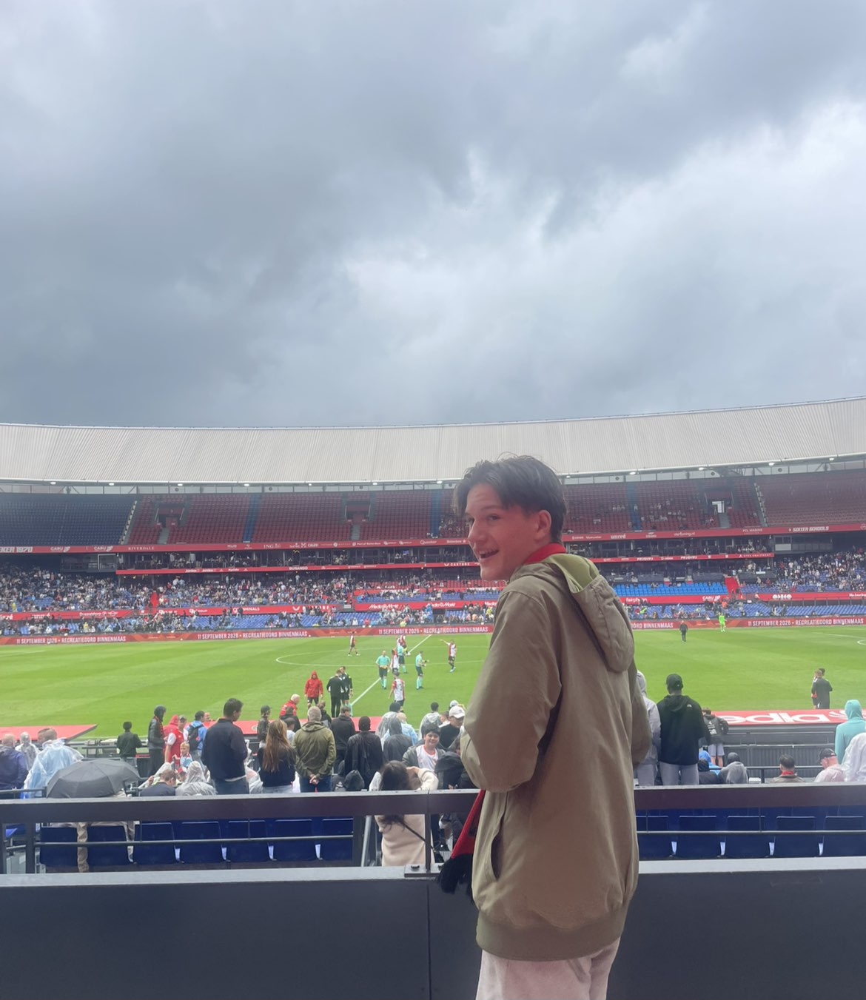

FEYENOORD IN EUROPA
Het verhaal van een onvergetelijk Champions League-seizoen.
ONTDEK HET VERHAALONS ARCHIEF
ONVERGETELIJKE EUROPESE AVONDEN
CHAMPIONS LEAGUE
Feyenoord - Bayern München
3 - 0
Een historische overwinning in De Kuip.
BEKIJK WEDSTRIJD → CHAMPIONS LEAGUEManchester City - Feyenoord
3 - 3
Een sensationele comeback in Manchester.
BEKIJK WEDSTRIJD → CHAMPIONS LEAGUEFeyenoord - AC Milan
1 - 0
Een belangrijke overwinning in de tussenronde.
BEKIJK WEDSTRIJD →MEER VAN DE KUIP TIMES
ONTDEK MEER
ACHTER DE WEBSITE
WIE ZIJN WIJ?

Martin
Medeoprichter van De Kuip Times en groot Feyenoord-supporter.

Gijs Pollie
Medeoprichter van De Kuip Times en groot Feyenoord-supporter.